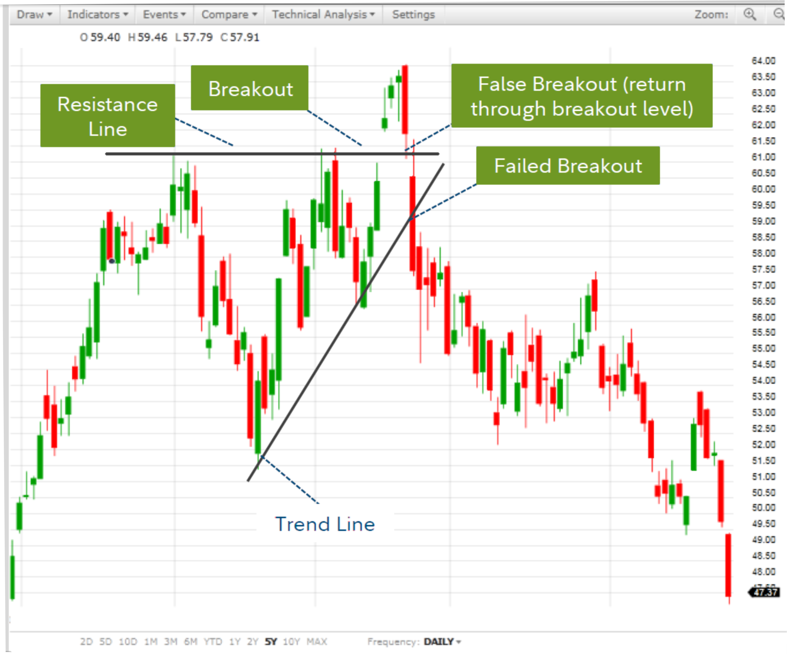
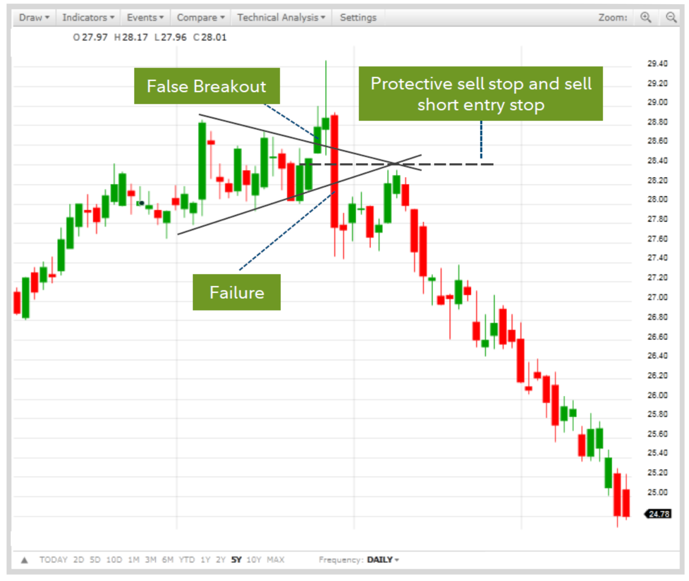
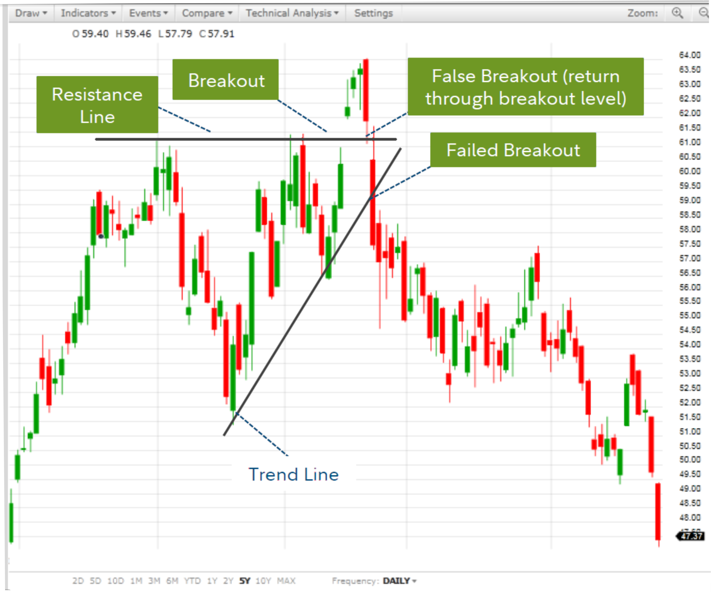
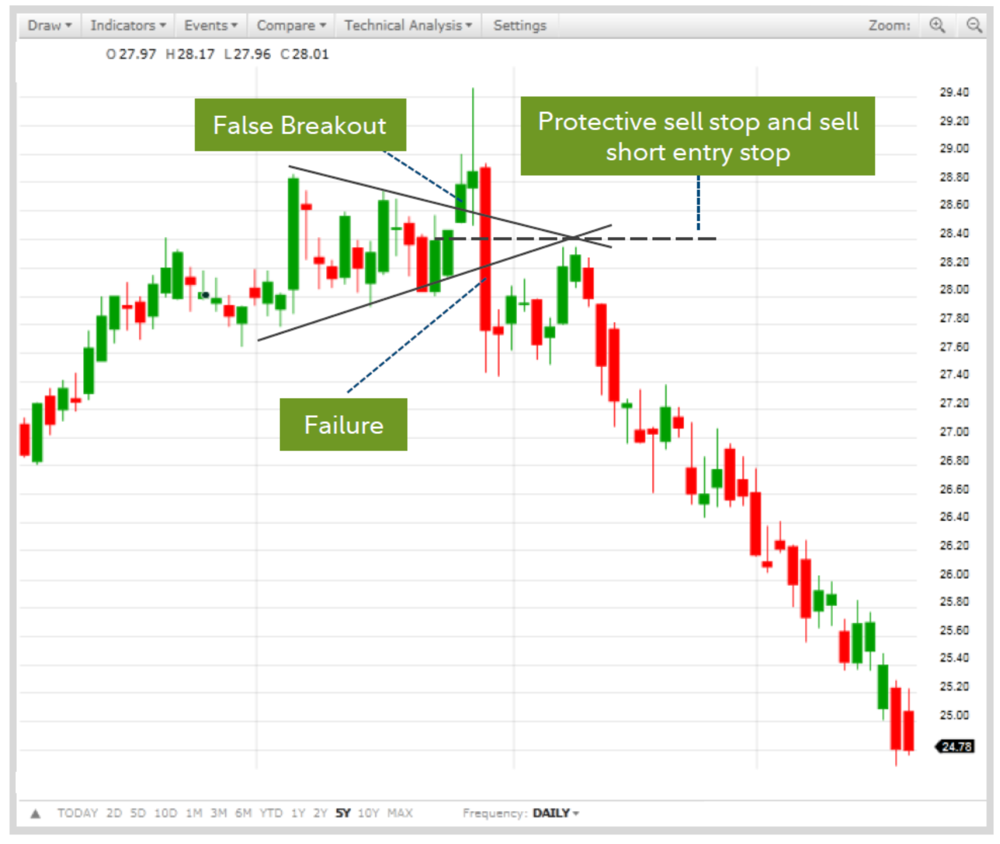

FX TRADING FOR NEW COMERS AND NEW INTAKES
This content is primarily for those who are new to the world of currency trading and are curious about how they can make money from the forex market. Existing traders who are trading on demo or live accounts should also find some useful advice in this content. READ MORE
FOREX TRADING AS A SERIOUS BUSINESS
Forex trading must be seen as a serious business, not just a casual roll of the dice or a leisurely pursuit. Forex trading should be considered and treated as a serious business, just like other types of businesses. Approaching trading from the perspective of a shrewd business person can greatly tilt your chances of success to your side. READ MORE
OPENING OF ACCOUNT
How do I setup an account? Before you set up a trading account to trade forex, you first need to choose which forex broker best suits your needs and trading style. There are mainly two types of brokers: READ MORE
UNIQUE CHARACTERISTICS OF THE FOREX MARKET
When you hear someone talking about the “forex market”, the chances are that he or she is referring to the spot forex market. There are many opportunities for you to profit from the forex market. For example, if you have an opinion that the Euro is going to rise in value against the US dollar READ MORE
INVESTING VS TRADING IN THE FOREIGN EXCHANGE MARKET
There are some important differences between investing and trading, even though some people may use these terms interchangeably without giving it much thought of what each entails.READ MORE
DIGITAL ACCOUNTING
The new-age accounting software is increasingly being leveraged by accounting firms to automate time-consuming and repetitive tasks as well as redefine existing business processes. They are switching from conventional accounting software to emerging technology innovations. READ MORE
 


